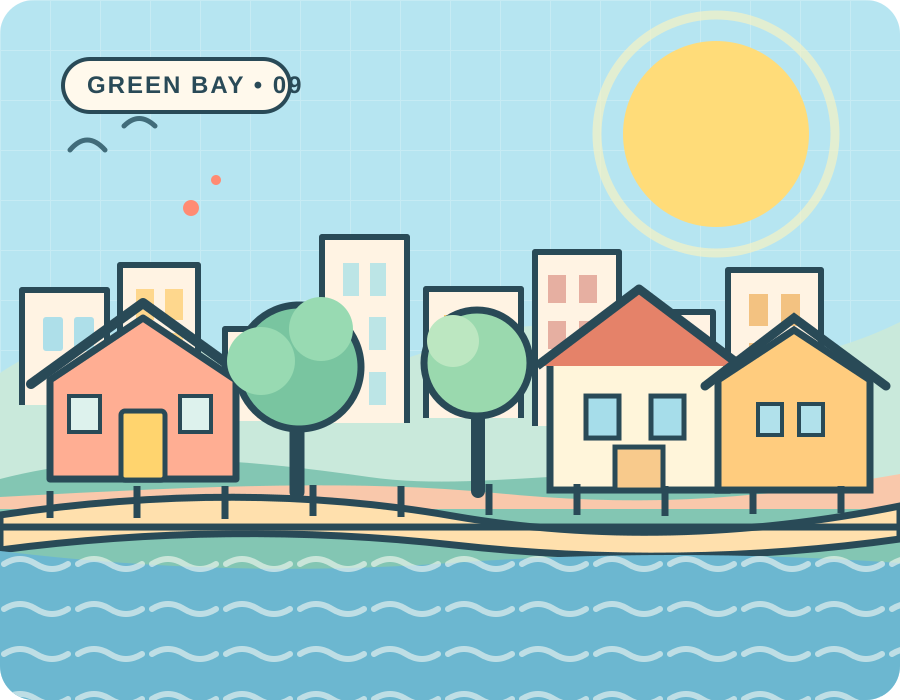

GieseDoes It.
A hometown worth showing up for.
I’m Devan Giese, running for Green Bay Common Council in District 9. I love this city: its waterfront, parks, neighborhood businesses, and the people who keep it moving. My campaign is about taking that everyday pride seriously, from the basics on your block to the decisions made at City Hall.
Pro-worker. Pro-union. Pro-public education. For the people of Green Bay.

This city has my whole heart.
From Tank Park to Marquette Park, from the Broadway corridor to the Shipyard, District 9 has places and people worth showing up for. Green Bay deserves the same care, energy, and loyalty that neighbors bring to it every day. That starts with listening, answering questions, and being present.
The story behind the campaignBig care for everyday things.
Where I stand, from good jobs and strong public schools to privacy, accessible streets, and the neighborhood basics that make Green Bay home.
Homes within reach
More ways to afford a home and stay rooted in Green Bay.
Read the approach 02 / STREETS & ACCESSStreets for everyone
Better sidewalks, safer crossings, maintained roads, and accessible public places.
Read the approach 03 / PRO-WORKER & PRO-UNIONWorkers make Green Bay
Union rights, fair wages, safer jobs, and respect for every worker, organized or not.
Read the approach 04 / PUBLIC EDUCATIONStrong schools, strong city
Supporting students, educators, libraries, and safe routes to learn.
Read the approach 05 / OPEN GOVERNMENTCity Hall that answers
Accessible meetings, clear decisions, and responsive local government.
Read the approach 06 / PRIVACY & SURVEILLANCEEnd Flock surveillance
Oppose Flock license-plate readers and expansion of citywide tracking.
Read the approach 07 / IMMIGRATION & DUE PROCESSOur neighbors belong
Oppose ICE raids and the use of city resources for civil immigration enforcement.
Read the approach 08 / LAND, WATER & ENERGYNo mega data centers
Oppose new hyperscale data centers and protect local land, power, and water.
Read the approach 09 / LOCAL NEIGHBORHOODSKeep Green Bay thriving
More welcoming parks, lively streets, healthy trees, and neighborhood pride.
Read the approachLet's be on a first-name basis.
I'm Devan. I think Green Bay is worth showing up for, and District 9 deserves a representative who notices the details, answers the phone, and treats every neighbor's concern seriously.
There's a lot more to share about who I am and what has brought me here.
Get to know meSee you around Green Bay.
Meet-and-greets, community conversations, volunteer opportunities, and other public campaign events. Find the latest dates here, all in one place.
Full calendar & detailsWe're putting together the public campaign calendar. New events will appear here as soon as they're announced.
What should we tackle, Green Bay?
From a street that needs attention to an idea that deserves a hearing, conversations with neighbors belong at the center of a campaign.